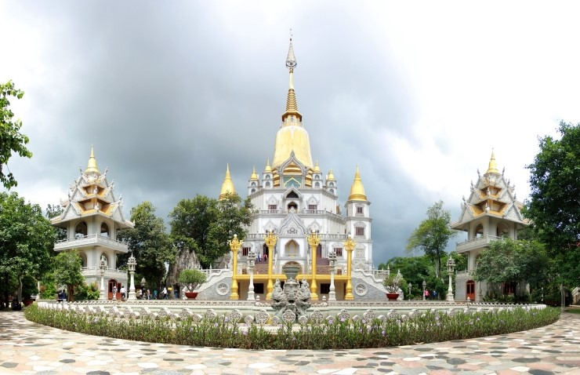
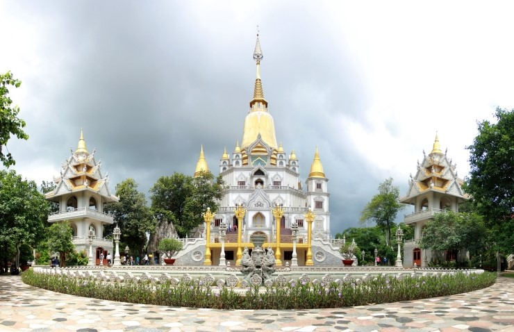

베트남
홍 강은 북부지역에, 메콩강은 남부지역에 물을댄다. 국토의 3분의 2가 숲. 북부는 사계절이 나타나고, 남부는 여름날씨가 계속되고 크게 건기와 우기로 나뉨
도시 : 하노이(수도), 호이안, 나짱, 달랏
세계유산 : 미선 유적, 퐁냐께방 국립 공원, 후에 역사 지구
홍 강은 북부지역에, 메콩강은 남부지역에 물을댄다. 국토의 3분의 2가 숲. 북부는 사계절이 나타나고, 남부는 여름날씨가 계속되고 크게 건기와 우기로 나뉨
도시 : 하노이(수도), 호이안, 나짱, 달랏
세계유산 : 미선 유적, 퐁냐께방 국립 공원, 후에 역사 지구
